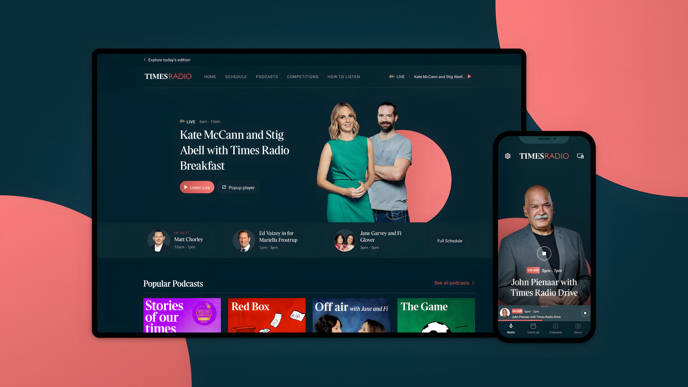

Results from in-person concept testing. Asked to rate the value of subscribing or registering at each step, subscribers averaged 4.6 out of 5 and people new to The Times averaged 4.4, with both rising by the end of the test.
Web and native audio platforms providing well-informed, entertaining and useful conversations, hosted by the most noted and respected presenters in Britain.
Visit Times Radio
With Times Radio, anyone can access news and talk radio without a Times subscription, fostering greater interactions and value within our subscriber base. Simultaneously, it broadens the brand's reach by attracting a cross segment of personas. Available on both web and native platforms, Times Radio ensures a seamless and accessible experience across all devices, enhancing user engagement and expanding audiences.
The launch campaign: politics from every angle, to read, watch and listen to.
In my capacity as a UX designer on the project, I led the integration of a groundbreaking intellectual property into our product ecosystem. My responsibilities encompassed validating the demand for initial concepts and formulating the architecture for the final product, overseeing the initiative from its conceptualisation to implementation. Through strategic planning and seamless collaboration with cross-functional teams, I played a key role in crafting a new product that not only engaged existing users but also fostered habits among new users.
Launching a new radio station demands a significant financial commitment. To minimise risks and assess the appeal of the value proposition, I developed preliminary prototype concepts for the digital product based on previously workshopped user stories. Despite their basic nature, these prototypes offered a reliable and cost effective method to evaluate both interest and accessibility during the initial stages of the initiative.
Convening a panel comprising both loyal subscribers and individuals not typically engaged with Times' content (unknowns), we subjected concepts for both web and native products to a comprehensive face-to-face, in-person study. Upon completion, both quantitative and qualitative datasets were analysed, and insights were formed. Armed with these insights, I could confidently present to business leaders that we had sufficient evidence to justify further investment, as there was a substantial appetite in both user segments.
There was a substantial appetite for Times Radio among both loyal subscribers and people who didn’t usually engage with The Times.
Results from in-person concept testing. Asked to rate the value of subscribing or registering at each step, subscribers averaged 4.6 out of 5 and people new to The Times averaged 4.4, with both rising by the end of the test.
The UX architecture for Times Radio was carefully designed to create a seamless and captivating user experience across a diverse audience, spanning from casual listeners to devoted news followers. This involved comprehensive user research, information hierarchy design, wireframing, and iterative testing.
The information architecture (IA) prioritised ease of navigation and quick access to key features such as the player and on-demand content. Relevant editorial content was recommended based on the current show and content being played, encouraging broader consumption, especially for non-subscribed users.
Lo-fi architecture for the Times Radio website, built around The Times’ existing and planned editorial structure. We mapped the native apps the same way.
The launch of Times Radio marked a significant milestone in the digital transformation of a traditional media brand like The Times, seamlessly integrating high-quality journalism with modern, user-centric radio experiences.
One of the primary achievements following the launch was the substantial increase in listening hours. Times Radio saw its total weekly listening hours rise by 25% year-on-year, reaching a record 3.96 million hours in Q4 2023. This increase indicates high user engagement with the content, reflecting the effectiveness of the design choices that made content easily accessible and engaging.
In addition to increased listening hours, Times Radio has attracted a substantial weekly audience of 600k weekly listeners. Feedback has been overwhelmingly positive, with high satisfaction ratings attributed to the quality of content and user experience. Surveys indicate that listeners appreciate the in-depth journalism and diverse programming, which set Times Radio apart from other stations. The station's success in appealing to its target demographic is evident in its high Net Promoter Score (NPS) and positive user reviews. These outcomes validate the user-centred design principles implemented, focusing on accessibility, ease of use, and engaging content presentation.

Former Prime Minister Boris Johnson in the studio as Times Radio’s first guest on launch day.
At News UK, teams often operated in distinct silos, often resulting in misalignment of expectations when defining the scope and velocity of squads. To address this, it was imperative for design to act as mediators, offering clear mental models of potential scopes swiftly. This facilitated Product, Design, and Engineering in establishing unified expectations for releases, particularly crucial given the company-wide deadline for launching a flagship brand like Times Radio.
Times Radio was a major strategic initiative for the business, leading many teams company-wide to reallocate resources to support its launch. It was imperative to minimise risks associated with introducing a new brand and maximise the effectiveness of our efforts. I played an important role in ensuring that the conceptual product was tested directly with users, assessing both its functionality and its impact on their perception of the brand and its subscription value. Armed with these insights, we could confidently allocate resources in line with our expected return on investment.